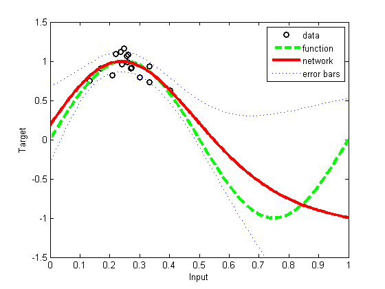

disp('This demonstration illustrates the application of Bayesian')
disp('re-estimation to determine the hyperparameters in a simple regression')
disp('problem. It is based on a local quadratic approximation to a mode of')
disp('the posterior distribution and the evidence maximization framework of')
disp('MacKay.')
disp(' ')
disp('First, we generate a synthetic data set consisting of a single input')
disp('variable x sampled from a Gaussian distribution, and a target variable')
disp('t obtained by evaluating sin(2*pi*x) and adding Gaussian noise.')
ndata = 16;
noise = 0.1;
randn('state', 0);
x = 0.25 + 0.07*randn(ndata, 1);
t = sin(2*pi*x) + noise*randn(size(x));
h = figure;
nplot = 200;
plotvals = linspace(0, 1, nplot)';
plot(x, t, 'ok', 'linewidth', 2)
xlabel('Input')
ylabel('Target')
hold on
axis([0 1 -1.5 1.5])
xs = linspace(0, 1, 100);
plot(xs, sin(2*pi*xs), '--g', 'linewidth', 3);
legend('data', 'function');
disp('Next we create a two-layer MLP network having 3 hidden units and one')
disp('linear output. The model assumes Gaussian target noise governed by an')
disp('inverse variance hyperparmeter beta, and uses a simple Gaussian prior')
disp('distribution governed by an inverse variance hyperparameter alpha.')
disp(' ');
disp('The network weights and the hyperparameters are initialised and then')
disp('the weights are optimized with the scaled conjugate gradient')
disp('algorithm using the SCG function, with the hyperparameters kept')
disp('fixed. After a maximum of 500 iterations, the hyperparameters are')
disp('re-estimated using the EVIDENCE function. The process of optimizing')
disp('the weights with fixed hyperparameters and then re-estimating the')
disp('hyperparameters is repeated for a total of 3 cycles.')
disp(' ')
nin = 1;
nhidden = 3;
nout = 1;
alpha = 0.01;
beta_init = 50.0;
net = mlp(nin, nhidden, nout, 'linear', alpha, beta_init);
nouter = 3;
ninner = 1;
options = zeros(1,18);
options(1) = 1;
options(2) = 1.0e-7;
options(3) = 1.0e-7;
options(14) = 500;
for k = 1:nouter
net = netopt(net, options, x, t, 'scg');
[net, gamma] = evidence(net, x, t, ninner);
fprintf(1, '\nRe-estimation cycle %d:\n', k);
fprintf(1, ' alpha = %8.5f\n', net.alpha);
fprintf(1, ' beta = %8.5f\n', net.beta);
fprintf(1, ' gamma = %8.5f\n\n', gamma);
disp(' ')
end
fprintf(1, 'true beta: %f\n', 1/(noise*noise));
disp(' ')
disp('Network training and hyperparameter re-estimation are now complete.')
disp('Compare the final value for the hyperparameter beta with the true')
disp('value.')
disp(' ')
disp('Notice that the final error value is close to the number of data')
disp(['points (', num2str(ndata),') divided by two.'])
disp(' ')
disp('We can now plot the function represented by the trained network. This')
disp('corresponds to the mean of the predictive distribution. We can also')
disp('plot ''error bars'' representing one standard deviation of the')
disp('predictive distribution around the mean.')
disp(' ')
[y, sig2] = netevfwd(mlppak(net), net, x, t, plotvals);
sig = sqrt(sig2);
[y, z] = mlpfwd(net, plotvals);
figure(h); hold on;
plot(plotvals, y, '-r', 'linewidth', 3)
xlabel('Input')
ylabel('Target')
plot(plotvals, y + sig, ':b');
plot(plotvals, y - sig, ':b');
legend('data', 'function', 'network', 'error bars');
disp(' ')
disp('Notice how the confidence interval spanned by the ''error bars'' is')
disp('smaller in the region of input space where the data density is high,')
disp('and becomes larger in regions away from the data.')
disp(' ')
printPmtkFigure('demoEvidenceReg')
This demonstration illustrates the application of Bayesian
re-estimation to determine the hyperparameters in a simple regression
problem. It is based on a local quadratic approximation to a mode of
the posterior distribution and the evidence maximization framework of
MacKay.
First, we generate a synthetic data set consisting of a single input
variable x sampled from a Gaussian distribution, and a target variable
t obtained by evaluating sin(2*pi*x) and adding Gaussian noise.
Next we create a two-layer MLP network having 3 hidden units and one
linear output. The model assumes Gaussian target noise governed by an
inverse variance hyperparmeter beta, and uses a simple Gaussian prior
distribution governed by an inverse variance hyperparameter alpha.
The network weights and the hyperparameters are initialised and then
the weights are optimized with the scaled conjugate gradient
algorithm using the SCG function, with the hyperparameters kept
fixed. After a maximum of 500 iterations, the hyperparameters are
re-estimated using the EVIDENCE function. The process of optimizing
the weights with fixed hyperparameters and then re-estimating the
hyperparameters is repeated for a total of 3 cycles.
Cycle 1 Error 8.089982 Scale 1.000000e+000
Cycle 2 Error 8.058461 Scale 5.000000e-001
Cycle 3 Error 8.058461 Scale 2.500000e-001
Cycle 4 Error 8.058461 Scale 1.000000e+000
Cycle 5 Error 7.940710 Scale 4.000000e+000
Cycle 6 Error 7.935986 Scale 2.000000e+000
Cycle 7 Error 7.856725 Scale 1.000000e+000
Cycle 8 Error 7.848976 Scale 5.000000e-001
Cycle 9 Error 7.848189 Scale 2.500000e-001
Cycle 10 Error 7.846595 Scale 1.250000e-001
Cycle 11 Error 7.846337 Scale 6.250000e-002
Cycle 12 Error 7.845577 Scale 3.125000e-002
Cycle 13 Error 7.845490 Scale 1.562500e-002
Cycle 14 Error 7.678913 Scale 7.812500e-003
Cycle 15 Error 7.392927 Scale 3.906250e-003
Cycle 16 Error 7.318061 Scale 1.953125e-003
Cycle 17 Error 7.310427 Scale 9.765625e-004
Cycle 18 Error 7.310427 Scale 4.882813e-004
Cycle 19 Error 7.310427 Scale 1.953125e-003
Cycle 20 Error 7.310427 Scale 7.812500e-003
Cycle 21 Error 7.310427 Scale 3.125000e-002
Cycle 22 Error 7.310427 Scale 1.250000e-001
Cycle 23 Error 7.183774 Scale 5.000000e-001
Cycle 24 Error 7.178550 Scale 2.500000e-001
Cycle 25 Error 7.111295 Scale 1.250000e-001
Cycle 26 Error 7.111295 Scale 6.250000e-002
Cycle 27 Error 7.111295 Scale 2.500000e-001
Cycle 28 Error 7.111295 Scale 1.000000e+000
Cycle 29 Error 6.781937 Scale 4.000000e+000
Cycle 30 Error 6.701043 Scale 2.000000e+000
Cycle 31 Error 6.699761 Scale 1.000000e+000
Cycle 32 Error 6.649371 Scale 5.000000e-001
Cycle 33 Error 6.646181 Scale 2.500000e-001
Cycle 34 Error 6.586370 Scale 1.250000e-001
Cycle 35 Error 6.584797 Scale 6.250000e-002
Cycle 36 Error 6.584797 Scale 3.125000e-002
Cycle 37 Error 6.584797 Scale 1.250000e-001
Cycle 38 Error 6.584797 Scale 5.000000e-001
Cycle 39 Error 6.350048 Scale 2.000000e+000
Cycle 40 Error 6.249683 Scale 1.000000e+000
Cycle 41 Error 6.188930 Scale 5.000000e-001
Cycle 42 Error 5.999962 Scale 2.500000e-001
Cycle 43 Error 5.989289 Scale 1.250000e-001
Cycle 44 Error 5.986475 Scale 6.250000e-002
Cycle 45 Error 5.942069 Scale 3.125000e-002
Cycle 46 Error 5.940278 Scale 1.562500e-002
Cycle 47 Error 5.940278 Scale 7.812500e-003
Cycle 48 Error 5.940278 Scale 3.125000e-002
Cycle 49 Error 5.940278 Scale 1.250000e-001
Cycle 50 Error 5.940278 Scale 5.000000e-001
Cycle 51 Error 5.651959 Scale 2.000000e+000
Cycle 52 Error 5.602084 Scale 1.000000e+000
Cycle 53 Error 5.602084 Scale 5.000000e-001
Cycle 54 Error 5.277293 Scale 2.000000e+000
Cycle 55 Error 5.065115 Scale 1.000000e+000
Cycle 56 Error 4.937888 Scale 5.000000e-001
Cycle 57 Error 4.556644 Scale 5.000000e-001
Cycle 58 Error 4.186899 Scale 2.500000e-001
Cycle 59 Error 4.179866 Scale 1.250000e-001
Cycle 60 Error 4.173252 Scale 6.250000e-002
Cycle 61 Error 4.135932 Scale 3.125000e-002
Cycle 62 Error 4.056386 Scale 1.562500e-002
Cycle 63 Error 3.927522 Scale 7.812500e-003
Cycle 64 Error 3.924936 Scale 3.906250e-003
Cycle 65 Error 3.923847 Scale 1.953125e-003
Cycle 66 Error 3.922109 Scale 9.765625e-004
Cycle 67 Error 3.920945 Scale 4.882813e-004
Cycle 68 Error 3.918981 Scale 2.441406e-004
Cycle 69 Error 3.918254 Scale 1.220703e-004
Cycle 70 Error 3.909434 Scale 6.103516e-005
Cycle 71 Error 3.850788 Scale 3.051758e-005
Cycle 72 Error 3.850713 Scale 3.051758e-005
Cycle 73 Error 3.823046 Scale 1.525879e-005
Cycle 74 Error 3.813643 Scale 7.629395e-006
Cycle 75 Error 3.811207 Scale 3.814697e-006
Cycle 76 Error 3.810778 Scale 1.907349e-006
Cycle 77 Error 3.810693 Scale 9.536743e-007
Cycle 78 Error 3.810460 Scale 4.768372e-007
Cycle 79 Error 3.810402 Scale 2.384186e-007
Cycle 80 Error 3.807920 Scale 1.192093e-007
Cycle 81 Error 3.786697 Scale 5.960464e-008
Cycle 82 Error 3.770689 Scale 2.980232e-008
Cycle 83 Error 3.768949 Scale 1.490116e-008
Cycle 84 Error 3.768043 Scale 7.450581e-009
Cycle 85 Error 3.767809 Scale 3.725290e-009
Cycle 86 Error 3.762451 Scale 1.862645e-009
Cycle 87 Error 3.761174 Scale 9.313226e-010
Cycle 88 Error 3.755181 Scale 4.656613e-010
Cycle 89 Error 3.754905 Scale 2.328306e-010
Cycle 90 Error 3.746664 Scale 1.164153e-010
Cycle 91 Error 3.728737 Scale 5.820766e-011
Cycle 92 Error 3.704649 Scale 2.910383e-011
Cycle 93 Error 3.694854 Scale 1.455192e-011
Cycle 94 Error 3.694002 Scale 7.275958e-012
Cycle 95 Error 3.693015 Scale 3.637979e-012
Cycle 96 Error 3.685413 Scale 1.818989e-012
Cycle 97 Error 3.685366 Scale 9.094947e-013
Cycle 98 Error 3.684981 Scale 4.547474e-013
Cycle 99 Error 3.684950 Scale 2.273737e-013
Cycle 100 Error 3.682989 Scale 1.136868e-013
Cycle 101 Error 3.677656 Scale 5.684342e-014
Cycle 102 Error 3.676919 Scale 2.842171e-014
Cycle 103 Error 3.676667 Scale 1.421085e-014
Cycle 104 Error 3.676622 Scale 7.105427e-015
Cycle 105 Error 3.676473 Scale 3.552714e-015
Cycle 106 Error 3.676254 Scale 1.776357e-015
Cycle 107 Error 3.676015 Scale 1.000000e-015
Cycle 108 Error 3.675662 Scale 1.000000e-015
Cycle 109 Error 3.675607 Scale 1.000000e-015
Cycle 110 Error 3.675320 Scale 1.000000e-015
Cycle 111 Error 3.673248 Scale 1.000000e-015
Cycle 112 Error 3.660087 Scale 1.000000e-015
Cycle 113 Error 3.657334 Scale 1.000000e-015
Cycle 114 Error 3.649675 Scale 1.000000e-015
Cycle 115 Error 3.648880 Scale 1.000000e-015
Cycle 116 Error 3.644567 Scale 1.000000e-015
Cycle 117 Error 3.631299 Scale 1.000000e-015
Cycle 118 Error 3.630904 Scale 1.000000e-015
Cycle 119 Error 3.630876 Scale 1.000000e-015
Cycle 120 Error 3.628858 Scale 1.000000e-015
Cycle 121 Error 3.627451 Scale 1.000000e-015
Cycle 122 Error 3.627326 Scale 1.000000e-015
Cycle 123 Error 3.627302 Scale 1.000000e-015
Cycle 124 Error 3.627299 Scale 1.000000e-015
Cycle 125 Error 3.627173 Scale 1.000000e-015
Cycle 126 Error 3.627163 Scale 1.000000e-015
Cycle 127 Error 3.627065 Scale 1.000000e-015
Cycle 128 Error 3.627059 Scale 1.000000e-015
Cycle 129 Error 3.627053 Scale 1.000000e-015
Cycle 130 Error 3.626166 Scale 1.000000e-015
Cycle 131 Error 3.626142 Scale 1.000000e-015
Cycle 132 Error 3.626089 Scale 1.000000e-015
Cycle 133 Error 3.624035 Scale 1.000000e-015
Cycle 134 Error 3.622056 Scale 1.000000e-015
Cycle 135 Error 3.621037 Scale 1.000000e-015
Cycle 136 Error 3.619450 Scale 1.000000e-015
Cycle 137 Error 3.619376 Scale 1.000000e-015
Cycle 138 Error 3.619334 Scale 1.000000e-015
Cycle 139 Error 3.619332 Scale 1.000000e-015
Cycle 140 Error 3.619102 Scale 1.000000e-015
Cycle 141 Error 3.619088 Scale 1.000000e-015
Cycle 142 Error 3.619073 Scale 1.000000e-015
Cycle 143 Error 3.617525 Scale 1.000000e-015
Cycle 144 Error 3.616797 Scale 1.000000e-015
Cycle 145 Error 3.616412 Scale 1.000000e-015
Cycle 146 Error 3.616157 Scale 1.000000e-015
Cycle 147 Error 3.614469 Scale 1.000000e-015
Cycle 148 Error 3.614381 Scale 1.000000e-015
Cycle 149 Error 3.614362 Scale 1.000000e-015
Cycle 150 Error 3.613971 Scale 1.000000e-015
Cycle 151 Error 3.613307 Scale 1.000000e-015
Cycle 152 Error 3.613281 Scale 1.000000e-015
Cycle 153 Error 3.613275 Scale 1.000000e-015
Cycle 154 Error 3.613274 Scale 1.000000e-015
Cycle 155 Error 3.613084 Scale 1.000000e-015
Cycle 156 Error 3.613059 Scale 1.000000e-015
Cycle 157 Error 3.613012 Scale 1.000000e-015
Cycle 158 Error 3.612410 Scale 1.000000e-015
Cycle 159 Error 3.612122 Scale 1.000000e-015
Cycle 160 Error 3.612037 Scale 1.000000e-015
Cycle 161 Error 3.612000 Scale 1.000000e-015
Cycle 162 Error 3.611953 Scale 1.000000e-015
Cycle 163 Error 3.611948 Scale 1.000000e-015
Cycle 164 Error 3.611941 Scale 1.000000e-015
Cycle 165 Error 3.611937 Scale 1.000000e-015
Cycle 166 Error 3.611936 Scale 1.000000e-015
Cycle 167 Error 3.611917 Scale 1.000000e-015
Cycle 168 Error 3.611916 Scale 1.000000e-015
Cycle 169 Error 3.611915 Scale 1.000000e-015
Cycle 170 Error 3.611832 Scale 1.000000e-015
Cycle 171 Error 3.611830 Scale 1.000000e-015
Cycle 172 Error 3.611818 Scale 1.000000e-015
Cycle 173 Error 3.611453 Scale 1.000000e-015
Cycle 174 Error 3.611299 Scale 1.000000e-015
Cycle 175 Error 3.611189 Scale 1.000000e-015
Cycle 176 Error 3.611141 Scale 1.000000e-015
Cycle 177 Error 3.611099 Scale 1.000000e-015
Cycle 178 Error 3.611084 Scale 1.000000e-015
Cycle 179 Error 3.611076 Scale 1.000000e-015
Cycle 180 Error 3.610492 Scale 1.000000e-015
Cycle 181 Error 3.610483 Scale 1.000000e-015
Cycle 182 Error 3.610462 Scale 1.000000e-015
Cycle 183 Error 3.610421 Scale 1.000000e-015
Cycle 184 Error 3.610339 Scale 1.000000e-015
Cycle 185 Error 3.610015 Scale 1.000000e-015
Cycle 186 Error 3.609746 Scale 1.000000e-015
Cycle 187 Error 3.609712 Scale 1.000000e-015
Cycle 188 Error 3.609651 Scale 1.000000e-015
Cycle 189 Error 3.609604 Scale 1.000000e-015
Cycle 190 Error 3.609463 Scale 1.000000e-015
Cycle 191 Error 3.609304 Scale 1.000000e-015
Cycle 192 Error 3.609262 Scale 1.000000e-015
Cycle 193 Error 3.609261 Scale 1.000000e-015
Cycle 194 Error 3.609260 Scale 1.000000e-015
Cycle 195 Error 3.609258 Scale 1.000000e-015
Cycle 196 Error 3.609258 Scale 1.000000e-015
Cycle 197 Error 3.609256 Scale 1.000000e-015
Cycle 198 Error 3.609255 Scale 1.000000e-015
Cycle 199 Error 3.609255 Scale 1.000000e-015
Cycle 200 Error 3.609200 Scale 1.000000e-015
Cycle 201 Error 3.609186 Scale 1.000000e-015
Cycle 202 Error 3.609185 Scale 1.000000e-015
Cycle 203 Error 3.609185 Scale 1.000000e-015
Cycle 204 Error 3.609185 Scale 4.000000e-015
Cycle 205 Error 3.609185 Scale 1.600000e-014
Cycle 206 Error 3.609185 Scale 6.400000e-014
Cycle 207 Error 3.609185 Scale 2.560000e-013
Cycle 208 Error 3.609185 Scale 1.024000e-012
Cycle 209 Error 3.609185 Scale 4.096000e-012
Cycle 210 Error 3.609185 Scale 1.638400e-011
Cycle 211 Error 3.609185 Scale 6.553600e-011
Cycle 212 Error 3.609185 Scale 2.621440e-010
Cycle 213 Error 3.609185 Scale 1.048576e-009
Cycle 214 Error 3.609185 Scale 4.194304e-009
Cycle 215 Error 3.609185 Scale 1.677722e-008
Cycle 216 Error 3.609185 Scale 6.710886e-008
Cycle 217 Error 3.609185 Scale 2.684355e-007
Cycle 218 Error 3.609185 Scale 1.073742e-006
Cycle 219 Error 3.609185 Scale 4.294967e-006
Cycle 220 Error 3.609185 Scale 1.717987e-005
Cycle 221 Error 3.609185 Scale 6.871948e-005
Cycle 222 Error 3.609185 Scale 2.748779e-004
Cycle 223 Error 3.609185 Scale 1.099512e-003
Cycle 224 Error 3.609185 Scale 4.398047e-003
Cycle 225 Error 3.609185 Scale 1.759219e-002
Cycle 226 Error 3.609185 Scale 7.036874e-002
Cycle 227 Error 3.607692 Scale 2.814750e-001
Cycle 228 Error 3.606765 Scale 1.407375e-001
Cycle 229 Error 3.606361 Scale 7.036874e-002
Cycle 230 Error 3.606237 Scale 3.518437e-002
Cycle 231 Error 3.604993 Scale 1.759219e-002
Cycle 232 Error 3.604888 Scale 8.796093e-003
Cycle 233 Error 3.604829 Scale 4.398047e-003
Cycle 234 Error 3.604333 Scale 2.199023e-003
Cycle 235 Error 3.604330 Scale 1.099512e-003
Cycle 236 Error 3.604300 Scale 5.497558e-004
Cycle 237 Error 3.604276 Scale 2.748779e-004
Cycle 238 Error 3.604273 Scale 1.374390e-004
Cycle 239 Error 3.604263 Scale 6.871948e-005
Cycle 240 Error 3.604262 Scale 3.435974e-005
Cycle 241 Error 3.604262 Scale 1.717987e-005
Cycle 242 Error 3.604262 Scale 6.871948e-005
Cycle 243 Error 3.604262 Scale 2.748779e-004
Cycle 244 Error 3.604262 Scale 1.099512e-003
Cycle 245 Error 3.604262 Scale 4.398047e-003
Cycle 246 Error 3.604262 Scale 1.759219e-002
Cycle 247 Error 3.603385 Scale 7.036874e-002
Cycle 248 Error 3.603278 Scale 3.518437e-002
Cycle 249 Error 3.603067 Scale 1.759219e-002
Cycle 250 Error 3.602106 Scale 8.796093e-003
Cycle 251 Error 3.602102 Scale 4.398047e-003
Cycle 252 Error 3.602013 Scale 2.199023e-003
Cycle 253 Error 3.602002 Scale 1.099512e-003
Cycle 254 Error 3.602002 Scale 5.497558e-004
Cycle 255 Error 3.602002 Scale 2.748779e-004
Cycle 256 Error 3.602002 Scale 1.099512e-003
Cycle 257 Error 3.602002 Scale 4.398047e-003
Cycle 258 Error 3.601716 Scale 1.759219e-002
Cycle 259 Error 3.600498 Scale 7.036874e-002
Cycle 260 Error 3.600228 Scale 3.518437e-002
Cycle 261 Error 3.600079 Scale 1.759219e-002
Cycle 262 Error 3.599992 Scale 8.796093e-003
Cycle 263 Error 3.599941 Scale 4.398047e-003
Cycle 264 Error 3.599867 Scale 2.199023e-003
Cycle 265 Error 3.599866 Scale 1.099512e-003
Cycle 266 Error 3.599747 Scale 5.497558e-004
Cycle 267 Error 3.599726 Scale 2.748779e-004
Cycle 268 Error 3.599726 Scale 1.374390e-004
Cycle 269 Error 3.599726 Scale 5.497558e-004
Cycle 270 Error 3.599726 Scale 2.199023e-003
Cycle 271 Error 3.599726 Scale 8.796093e-003
Cycle 272 Error 3.599726 Scale 3.518437e-002
Cycle 273 Error 3.599064 Scale 1.407375e-001
Cycle 274 Error 3.598343 Scale 7.036874e-002
Cycle 275 Error 3.598063 Scale 3.518437e-002
Cycle 276 Error 3.598062 Scale 1.759219e-002
Cycle 277 Error 3.598061 Scale 8.796093e-003
Cycle 278 Error 3.598043 Scale 4.398047e-003
Cycle 279 Error 3.598039 Scale 2.199023e-003
Cycle 280 Error 3.598039 Scale 1.099512e-003
Cycle 281 Error 3.598039 Scale 5.497558e-004
Cycle 282 Error 3.598039 Scale 2.199023e-003
Cycle 283 Error 3.598039 Scale 8.796093e-003
Cycle 284 Error 3.598039 Scale 3.518437e-002
Cycle 285 Error 3.597290 Scale 1.407375e-001
Cycle 286 Error 3.597094 Scale 7.036874e-002
Cycle 287 Error 3.596486 Scale 3.518437e-002
Cycle 288 Error 3.596269 Scale 1.759219e-002
Cycle 289 Error 3.596243 Scale 8.796093e-003
Cycle 290 Error 3.596113 Scale 4.398047e-003
Cycle 291 Error 3.596102 Scale 2.199023e-003
Cycle 292 Error 3.596079 Scale 1.099512e-003
Cycle 293 Error 3.596060 Scale 5.497558e-004
Cycle 294 Error 3.596059 Scale 2.748779e-004
Cycle 295 Error 3.595983 Scale 1.374390e-004
Cycle 296 Error 3.595977 Scale 6.871948e-005
Cycle 297 Error 3.595879 Scale 3.435974e-005
Cycle 298 Error 3.595878 Scale 1.717987e-005
Cycle 299 Error 3.595695 Scale 8.589935e-006
Cycle 300 Error 3.595676 Scale 8.589935e-006
Cycle 301 Error 3.595644 Scale 4.294967e-006
Cycle 302 Error 3.595544 Scale 2.147484e-006
Cycle 303 Error 3.595412 Scale 1.073742e-006
Cycle 304 Error 3.595405 Scale 5.368709e-007
Cycle 305 Error 3.595395 Scale 2.684355e-007
Cycle 306 Error 3.595395 Scale 1.342177e-007
Cycle 307 Error 3.595379 Scale 6.710886e-008
Cycle 308 Error 3.595368 Scale 3.355443e-008
Cycle 309 Error 3.595102 Scale 1.677722e-008
Cycle 310 Error 3.595100 Scale 8.388608e-009
Cycle 311 Error 3.595098 Scale 4.194304e-009
Cycle 312 Error 3.595026 Scale 2.097152e-009
Cycle 313 Error 3.594969 Scale 1.048576e-009
Cycle 314 Error 3.594968 Scale 5.242880e-010
Cycle 315 Error 3.594955 Scale 2.621440e-010
Cycle 316 Error 3.594953 Scale 1.310720e-010
Cycle 317 Error 3.594889 Scale 6.553600e-011
Cycle 318 Error 3.594888 Scale 3.276800e-011
Cycle 319 Error 3.594862 Scale 1.638400e-011
Cycle 320 Error 3.594861 Scale 8.192000e-012
Cycle 321 Error 3.594861 Scale 4.096000e-012
Cycle 322 Error 3.594854 Scale 2.048000e-012
Cycle 323 Error 3.594841 Scale 1.024000e-012
Cycle 324 Error 3.594840 Scale 5.120000e-013
Cycle 325 Error 3.594840 Scale 2.560000e-013
Cycle 326 Error 3.594840 Scale 1.024000e-012
Cycle 327 Error 3.594840 Scale 4.096000e-012
Cycle 328 Error 3.594840 Scale 1.638400e-011
Cycle 329 Error 3.594840 Scale 6.553600e-011
Cycle 330 Error 3.594840 Scale 2.621440e-010
Cycle 331 Error 3.594840 Scale 1.048576e-009
Cycle 332 Error 3.594840 Scale 4.194304e-009
Cycle 333 Error 3.594840 Scale 1.677722e-008
Cycle 334 Error 3.594840 Scale 6.710886e-008
Cycle 335 Error 3.594840 Scale 2.684355e-007
Cycle 336 Error 3.594840 Scale 1.073742e-006
Cycle 337 Error 3.594840 Scale 4.294967e-006
Cycle 338 Error 3.594840 Scale 1.717987e-005
Cycle 339 Error 3.594840 Scale 6.871948e-005
Cycle 340 Error 3.594840 Scale 2.748779e-004
Cycle 341 Error 3.594840 Scale 1.099512e-003
Cycle 342 Error 3.594840 Scale 4.398047e-003
Cycle 343 Error 3.594840 Scale 1.759219e-002
Cycle 344 Error 3.594624 Scale 7.036874e-002
Cycle 345 Error 3.594599 Scale 3.518437e-002
Cycle 346 Error 3.594454 Scale 1.759219e-002
Cycle 347 Error 3.594303 Scale 8.796093e-003
Cycle 348 Error 3.594302 Scale 4.398047e-003
Cycle 349 Error 3.594197 Scale 2.199023e-003
Cycle 350 Error 3.594192 Scale 1.099512e-003
Cycle 351 Error 3.594152 Scale 5.497558e-004
Cycle 352 Error 3.594146 Scale 2.748779e-004
Cycle 353 Error 3.594143 Scale 1.374390e-004
Cycle 354 Error 3.594142 Scale 6.871948e-005
Cycle 355 Error 3.594142 Scale 3.435974e-005
Cycle 356 Error 3.594029 Scale 1.717987e-005
Cycle 357 Error 3.594025 Scale 8.589935e-006
Cycle 358 Error 3.594020 Scale 4.294967e-006
Cycle 359 Error 3.594020 Scale 2.147484e-006
Cycle 360 Error 3.594019 Scale 1.073742e-006
Cycle 361 Error 3.594016 Scale 5.368709e-007
Cycle 362 Error 3.594007 Scale 2.684355e-007
Cycle 363 Error 3.594007 Scale 1.342177e-007
Cycle 364 Error 3.593928 Scale 6.710886e-008
Cycle 365 Error 3.593921 Scale 3.355443e-008
Cycle 366 Error 3.593910 Scale 1.677722e-008
Cycle 367 Error 3.593908 Scale 8.388608e-009
Cycle 368 Error 3.593907 Scale 4.194304e-009
Cycle 369 Error 3.593907 Scale 2.097152e-009
Cycle 370 Error 3.593907 Scale 1.048576e-009
Cycle 371 Error 3.593906 Scale 5.242880e-010
Cycle 372 Error 3.593904 Scale 2.621440e-010
Cycle 373 Error 3.593904 Scale 1.310720e-010
Cycle 374 Error 3.593878 Scale 6.553600e-011
Cycle 375 Error 3.593875 Scale 3.276800e-011
Cycle 376 Error 3.593864 Scale 1.638400e-011
Cycle 377 Error 3.593784 Scale 6.553600e-011
Cycle 378 Error 3.593779 Scale 3.276800e-011
Cycle 379 Error 3.593770 Scale 1.638400e-011
Cycle 380 Error 3.593770 Scale 8.192000e-012
Cycle 381 Error 3.593761 Scale 4.096000e-012
Cycle 382 Error 3.593751 Scale 2.048000e-012
Cycle 383 Error 3.593644 Scale 1.024000e-012
Cycle 384 Error 3.593643 Scale 5.120000e-013
Cycle 385 Error 3.593643 Scale 2.560000e-013
Cycle 386 Error 3.593643 Scale 1.280000e-013
Cycle 387 Error 3.593643 Scale 6.400000e-014
Cycle 388 Error 3.593643 Scale 3.200000e-014
Cycle 389 Error 3.593642 Scale 1.600000e-014
Cycle 390 Error 3.593642 Scale 8.000000e-015
Cycle 391 Error 3.593642 Scale 4.000000e-015
Cycle 392 Error 3.593636 Scale 2.000000e-015
Cycle 393 Error 3.593636 Scale 1.000000e-015
Cycle 394 Error 3.593588 Scale 1.000000e-015
Cycle 395 Error 3.593582 Scale 1.000000e-015
Cycle 396 Error 3.593580 Scale 1.000000e-015
Cycle 397 Error 3.593579 Scale 1.000000e-015
Cycle 398 Error 3.593578 Scale 1.000000e-015
Cycle 399 Error 3.593577 Scale 1.000000e-015
Cycle 400 Error 3.593577 Scale 1.000000e-015
Cycle 401 Error 3.593576 Scale 1.000000e-015
Cycle 402 Error 3.593564 Scale 1.000000e-015
Cycle 403 Error 3.593564 Scale 1.000000e-015
Cycle 404 Error 3.593520 Scale 1.000000e-015
Cycle 405 Error 3.593520 Scale 1.000000e-015
Cycle 406 Error 3.593520 Scale 1.000000e-015
Cycle 407 Error 3.593520 Scale 1.000000e-015
Cycle 408 Error 3.593519 Scale 1.000000e-015
Cycle 409 Error 3.593519 Scale 1.000000e-015
Cycle 410 Error 3.593519 Scale 1.000000e-015
Cycle 411 Error 3.593519 Scale 1.000000e-015
Cycle 412 Error 3.593517 Scale 1.000000e-015
Cycle 413 Error 3.593517 Scale 1.000000e-015
Cycle 414 Error 3.593489 Scale 1.000000e-015
Cycle 415 Error 3.593456 Scale 1.000000e-015
Cycle 416 Error 3.593456 Scale 1.000000e-015
Cycle 417 Error 3.593450 Scale 1.000000e-015
Cycle 418 Error 3.593450 Scale 1.000000e-015
Cycle 419 Error 3.593402 Scale 1.000000e-015
Cycle 420 Error 3.593401 Scale 1.000000e-015
Cycle 421 Error 3.593401 Scale 1.000000e-015
Cycle 422 Error 3.593395 Scale 1.000000e-015
Cycle 423 Error 3.593395 Scale 1.000000e-015
Cycle 424 Error 3.593365 Scale 1.000000e-015
Cycle 425 Error 3.593362 Scale 1.000000e-015
Cycle 426 Error 3.593352 Scale 1.000000e-015
Cycle 427 Error 3.593352 Scale 1.000000e-015
Cycle 428 Error 3.593352 Scale 1.000000e-015
Cycle 429 Error 3.593347 Scale 1.000000e-015
Cycle 430 Error 3.593347 Scale 1.000000e-015
Cycle 431 Error 3.593343 Scale 1.000000e-015
Cycle 432 Error 3.593343 Scale 1.000000e-015
Cycle 433 Error 3.593343 Scale 1.000000e-015
Cycle 434 Error 3.593304 Scale 1.000000e-015
Cycle 435 Error 3.593303 Scale 1.000000e-015
Cycle 436 Error 3.593303 Scale 1.000000e-015
Cycle 437 Error 3.593303 Scale 1.000000e-015
Cycle 438 Error 3.593303 Scale 1.000000e-015
Cycle 439 Error 3.593300 Scale 1.000000e-015
Cycle 440 Error 3.593299 Scale 1.000000e-015
Cycle 441 Error 3.593299 Scale 1.000000e-015
Cycle 442 Error 3.593298 Scale 1.000000e-015
Cycle 443 Error 3.593297 Scale 1.000000e-015
Cycle 444 Error 3.593297 Scale 1.000000e-015
Cycle 445 Error 3.593297 Scale 4.000000e-015
Cycle 446 Error 3.593297 Scale 1.600000e-014
Cycle 447 Error 3.593297 Scale 6.400000e-014
Cycle 448 Error 3.593297 Scale 2.560000e-013
Cycle 449 Error 3.593297 Scale 1.024000e-012
Cycle 450 Error 3.593297 Scale 4.096000e-012
Cycle 451 Error 3.593297 Scale 1.638400e-011
Cycle 452 Error 3.593297 Scale 6.553600e-011
Cycle 453 Error 3.593297 Scale 2.621440e-010
Cycle 454 Error 3.593297 Scale 1.048576e-009
Cycle 455 Error 3.593297 Scale 4.194304e-009
Cycle 456 Error 3.593297 Scale 1.677722e-008
Cycle 457 Error 3.593297 Scale 6.710886e-008
Cycle 458 Error 3.593297 Scale 2.684355e-007
Cycle 459 Error 3.593297 Scale 1.073742e-006
Cycle 460 Error 3.593297 Scale 4.294967e-006
Cycle 461 Error 3.593297 Scale 1.717987e-005
Cycle 462 Error 3.593297 Scale 6.871948e-005
Cycle 463 Error 3.593297 Scale 2.748779e-004
Cycle 464 Error 3.593297 Scale 1.099512e-003
Cycle 465 Error 3.593297 Scale 4.398047e-003
Cycle 466 Error 3.593297 Scale 1.759219e-002
Cycle 467 Error 3.593259 Scale 7.036874e-002
Cycle 468 Error 3.593222 Scale 3.518437e-002
Cycle 469 Error 3.593217 Scale 1.759219e-002
Cycle 470 Error 3.593199 Scale 8.796093e-003
Cycle 471 Error 3.593185 Scale 4.398047e-003
Cycle 472 Error 3.593185 Scale 2.199023e-003
Cycle 473 Error 3.593182 Scale 8.796093e-003
Cycle 474 Error 3.593133 Scale 3.518437e-002
Cycle 475 Error 3.593128 Scale 1.759219e-002
Cycle 476 Error 3.593123 Scale 8.796093e-003
Cycle 477 Error 3.593123 Scale 4.398047e-003
Cycle 478 Error 3.593086 Scale 2.199023e-003
Cycle 479 Error 3.593085 Scale 1.099512e-003
Cycle 480 Error 3.593082 Scale 5.497558e-004
Cycle 481 Error 3.593082 Scale 2.748779e-004
Cycle 482 Error 3.593080 Scale 1.374390e-004
Cycle 483 Error 3.593075 Scale 6.871948e-005
Cycle 484 Error 3.593074 Scale 3.435974e-005
Cycle 485 Error 3.593070 Scale 1.717987e-005
Cycle 486 Error 3.593069 Scale 8.589935e-006
Cycle 487 Error 3.593069 Scale 4.294967e-006
Cycle 488 Error 3.593061 Scale 2.147484e-006
Cycle 489 Error 3.593005 Scale 1.073742e-006
Cycle 490 Error 3.593004 Scale 5.368709e-007
Cycle 491 Error 3.593000 Scale 2.684355e-007
Cycle 492 Error 3.593000 Scale 1.342177e-007
Cycle 493 Error 3.592999 Scale 6.710886e-008
Cycle 494 Error 3.592998 Scale 3.355443e-008
Cycle 495 Error 3.592998 Scale 1.677722e-008
Cycle 496 Error 3.592952 Scale 8.388608e-009
Cycle 497 Error 3.592952 Scale 4.194304e-009
Cycle 498 Error 3.592947 Scale 2.097152e-009
Cycle 499 Error 3.592936 Scale 1.048576e-009
Cycle 500 Error 3.592935 Scale 5.242880e-010
Maximum number of iterations has been exceeded
Re-estimation cycle 1:
alpha = 0.10728
beta = 69.83252
gamma = 6.85645
Cycle 1 Error 7.996398 Scale 1.000000e+000
Cycle 2 Error 7.794134 Scale 5.000000e-001
Cycle 3 Error 7.793539 Scale 2.500000e-001
Cycle 4 Error 7.762142 Scale 1.250000e-001
Cycle 5 Error 7.760715 Scale 6.250000e-002
Cycle 6 Error 7.602606 Scale 3.125000e-002
Cycle 7 Error 7.601912 Scale 1.562500e-002
Cycle 8 Error 7.594259 Scale 7.812500e-003
Cycle 9 Error 7.594152 Scale 3.906250e-003
Cycle 10 Error 7.590214 Scale 1.953125e-003
Cycle 11 Error 7.589790 Scale 9.765625e-004
Cycle 12 Error 7.588160 Scale 4.882813e-004
Cycle 13 Error 7.585920 Scale 2.441406e-004
Cycle 14 Error 7.575905 Scale 1.220703e-004
Cycle 15 Error 7.573987 Scale 6.103516e-005
Cycle 16 Error 7.567425 Scale 3.051758e-005
Cycle 17 Error 7.562239 Scale 1.525879e-005
Cycle 18 Error 7.528550 Scale 7.629395e-006
Cycle 19 Error 7.486808 Scale 3.814697e-006
Cycle 20 Error 7.486371 Scale 1.907349e-006
Cycle 21 Error 7.482565 Scale 9.536743e-007
Cycle 22 Error 7.482510 Scale 4.768372e-007
Cycle 23 Error 7.462021 Scale 2.384186e-007
Cycle 24 Error 7.461964 Scale 1.192093e-007
Cycle 25 Error 7.458614 Scale 5.960464e-008
Cycle 26 Error 7.456322 Scale 2.980232e-008
Cycle 27 Error 7.456322 Scale 1.490116e-008
Cycle 28 Error 7.456322 Scale 5.960464e-008
Cycle 29 Error 7.456322 Scale 2.384186e-007
Cycle 30 Error 7.456322 Scale 9.536743e-007
Cycle 31 Error 7.456322 Scale 3.814697e-006
Cycle 32 Error 7.456322 Scale 1.525879e-005
Cycle 33 Error 7.456322 Scale 6.103516e-005
Cycle 34 Error 7.456322 Scale 2.441406e-004
Cycle 35 Error 7.456322 Scale 9.765625e-004
Cycle 36 Error 7.456322 Scale 3.906250e-003
Cycle 37 Error 7.456322 Scale 1.562500e-002
Cycle 38 Error 7.456322 Scale 6.250000e-002
Cycle 39 Error 7.432795 Scale 2.500000e-001
Cycle 40 Error 7.353742 Scale 2.500000e-001
Cycle 41 Error 7.347729 Scale 1.250000e-001
Cycle 42 Error 7.347160 Scale 6.250000e-002
Cycle 43 Error 7.346603 Scale 3.125000e-002
Cycle 44 Error 7.341901 Scale 1.562500e-002
Cycle 45 Error 7.328628 Scale 7.812500e-003
Cycle 46 Error 7.316562 Scale 3.906250e-003
Cycle 47 Error 7.316562 Scale 1.953125e-003
Cycle 48 Error 7.316413 Scale 9.765625e-004
Cycle 49 Error 7.316334 Scale 4.882813e-004
Cycle 50 Error 7.316217 Scale 2.441406e-004
Cycle 51 Error 7.316128 Scale 1.220703e-004
Cycle 52 Error 7.315970 Scale 6.103516e-005
Cycle 53 Error 7.315877 Scale 3.051758e-005
Cycle 54 Error 7.314957 Scale 1.525879e-005
Cycle 55 Error 7.298319 Scale 7.629395e-006
Cycle 56 Error 7.297041 Scale 3.814697e-006
Cycle 57 Error 7.296011 Scale 1.907349e-006
Cycle 58 Error 7.295932 Scale 9.536743e-007
Cycle 59 Error 7.287285 Scale 4.768372e-007
Cycle 60 Error 7.286030 Scale 2.384186e-007
Cycle 61 Error 7.280532 Scale 1.192093e-007
Cycle 62 Error 7.271717 Scale 5.960464e-008
Cycle 63 Error 7.262903 Scale 2.980232e-008
Cycle 64 Error 7.259306 Scale 1.490116e-008
Cycle 65 Error 7.250675 Scale 7.450581e-009
Cycle 66 Error 7.227648 Scale 3.725290e-009
Cycle 67 Error 7.226863 Scale 1.862645e-009
Cycle 68 Error 7.226270 Scale 9.313226e-010
Cycle 69 Error 7.226184 Scale 4.656613e-010
Cycle 70 Error 7.225846 Scale 2.328306e-010
Cycle 71 Error 7.225749 Scale 1.164153e-010
Cycle 72 Error 7.225310 Scale 5.820766e-011
Cycle 73 Error 7.224976 Scale 2.910383e-011
Cycle 74 Error 7.224627 Scale 1.455192e-011
Cycle 75 Error 7.217098 Scale 7.275958e-012
Cycle 76 Error 7.213895 Scale 3.637979e-012
Cycle 77 Error 7.207169 Scale 1.818989e-012
Cycle 78 Error 7.207063 Scale 9.094947e-013
Cycle 79 Error 7.205740 Scale 4.547474e-013
Cycle 80 Error 7.199691 Scale 2.273737e-013
Cycle 81 Error 7.196177 Scale 1.136868e-013
Cycle 82 Error 7.196033 Scale 5.684342e-014
Cycle 83 Error 7.195936 Scale 2.842171e-014
Cycle 84 Error 7.195488 Scale 1.421085e-014
Cycle 85 Error 7.194375 Scale 7.105427e-015
Cycle 86 Error 7.187655 Scale 3.552714e-015
Cycle 87 Error 7.186451 Scale 1.776357e-015
Cycle 88 Error 7.186451 Scale 1.000000e-015
Cycle 89 Error 7.186451 Scale 4.000000e-015
Cycle 90 Error 7.186451 Scale 1.600000e-014
Cycle 91 Error 7.186451 Scale 6.400000e-014
Cycle 92 Error 7.186451 Scale 2.560000e-013
Cycle 93 Error 7.186451 Scale 1.024000e-012
Cycle 94 Error 7.186451 Scale 4.096000e-012
Cycle 95 Error 7.186451 Scale 1.638400e-011
Cycle 96 Error 7.186451 Scale 6.553600e-011
Cycle 97 Error 7.186451 Scale 2.621440e-010
Cycle 98 Error 7.186451 Scale 1.048576e-009
Cycle 99 Error 7.186451 Scale 4.194304e-009
Cycle 100 Error 7.186451 Scale 1.677722e-008
Cycle 101 Error 7.186451 Scale 6.710886e-008
Cycle 102 Error 7.186451 Scale 2.684355e-007
Cycle 103 Error 7.186451 Scale 1.073742e-006
Cycle 104 Error 7.186451 Scale 4.294967e-006
Cycle 105 Error 7.186451 Scale 1.717987e-005
Cycle 106 Error 7.186451 Scale 6.871948e-005
Cycle 107 Error 7.186451 Scale 2.748779e-004
Cycle 108 Error 7.186451 Scale 1.099512e-003
Cycle 109 Error 7.186451 Scale 4.398047e-003
Cycle 110 Error 7.186451 Scale 1.759219e-002
Cycle 111 Error 7.179657 Scale 7.036874e-002
Cycle 112 Error 7.147944 Scale 7.036874e-002
Cycle 113 Error 7.122622 Scale 3.518437e-002
Cycle 114 Error 7.122602 Scale 1.759219e-002
Cycle 115 Error 7.110991 Scale 8.796093e-003
Cycle 116 Error 7.110900 Scale 4.398047e-003
Cycle 117 Error 7.105211 Scale 2.199023e-003
Cycle 118 Error 7.104707 Scale 1.099512e-003
Cycle 119 Error 7.100111 Scale 5.497558e-004
Cycle 120 Error 7.100082 Scale 2.748779e-004
Cycle 121 Error 7.099927 Scale 1.374390e-004
Cycle 122 Error 7.099898 Scale 6.871948e-005
Cycle 123 Error 7.099302 Scale 3.435974e-005
Cycle 124 Error 7.099231 Scale 1.717987e-005
Cycle 125 Error 7.098889 Scale 8.589935e-006
Cycle 126 Error 7.098861 Scale 4.294967e-006
Cycle 127 Error 7.095101 Scale 2.147484e-006
Cycle 128 Error 7.087485 Scale 1.073742e-006
Cycle 129 Error 7.085176 Scale 5.368709e-007
Cycle 130 Error 7.085095 Scale 2.684355e-007
Cycle 131 Error 7.085080 Scale 1.342177e-007
Cycle 132 Error 7.085041 Scale 6.710886e-008
Cycle 133 Error 7.085029 Scale 3.355443e-008
Cycle 134 Error 7.084949 Scale 1.677722e-008
Cycle 135 Error 7.084915 Scale 8.388608e-009
Cycle 136 Error 7.084884 Scale 4.194304e-009
Cycle 137 Error 7.084589 Scale 2.097152e-009
Cycle 138 Error 7.080769 Scale 1.048576e-009
Cycle 139 Error 7.076145 Scale 5.242880e-010
Cycle 140 Error 7.076000 Scale 2.621440e-010
Cycle 141 Error 7.075849 Scale 1.310720e-010
Cycle 142 Error 7.075814 Scale 6.553600e-011
Cycle 143 Error 7.075721 Scale 3.276800e-011
Cycle 144 Error 7.075696 Scale 1.638400e-011
Cycle 145 Error 7.075604 Scale 8.192000e-012
Cycle 146 Error 7.075555 Scale 4.096000e-012
Cycle 147 Error 7.075149 Scale 2.048000e-012
Cycle 148 Error 7.070215 Scale 1.024000e-012
Cycle 149 Error 7.066459 Scale 5.120000e-013
Cycle 150 Error 7.066183 Scale 2.560000e-013
Cycle 151 Error 7.066108 Scale 1.280000e-013
Cycle 152 Error 7.066036 Scale 6.400000e-014
Cycle 153 Error 7.066015 Scale 3.200000e-014
Cycle 154 Error 7.065892 Scale 1.600000e-014
Cycle 155 Error 7.065840 Scale 8.000000e-015
Cycle 156 Error 7.065791 Scale 4.000000e-015
Cycle 157 Error 7.065475 Scale 2.000000e-015
Cycle 158 Error 7.063654 Scale 1.000000e-015
Cycle 159 Error 7.059397 Scale 1.000000e-015
Cycle 160 Error 7.059276 Scale 1.000000e-015
Cycle 161 Error 7.058556 Scale 1.000000e-015
Cycle 162 Error 7.058502 Scale 1.000000e-015
Cycle 163 Error 7.058348 Scale 1.000000e-015
Cycle 164 Error 7.058321 Scale 1.000000e-015
Cycle 165 Error 7.053897 Scale 1.000000e-015
Cycle 166 Error 7.053669 Scale 1.000000e-015
Cycle 167 Error 7.052272 Scale 1.000000e-015
Cycle 168 Error 7.052213 Scale 1.000000e-015
Cycle 169 Error 7.051405 Scale 1.000000e-015
Cycle 170 Error 7.046207 Scale 1.000000e-015
Cycle 171 Error 7.045886 Scale 1.000000e-015
Cycle 172 Error 7.045704 Scale 1.000000e-015
Cycle 173 Error 7.045579 Scale 1.000000e-015
Cycle 174 Error 7.045489 Scale 1.000000e-015
Cycle 175 Error 7.043848 Scale 1.000000e-015
Cycle 176 Error 7.043648 Scale 1.000000e-015
Cycle 177 Error 7.043152 Scale 1.000000e-015
Cycle 178 Error 7.040844 Scale 1.000000e-015
Cycle 179 Error 7.035479 Scale 1.000000e-015
Cycle 180 Error 7.035455 Scale 1.000000e-015
Cycle 181 Error 7.035416 Scale 1.000000e-015
Cycle 182 Error 7.035407 Scale 1.000000e-015
Cycle 183 Error 7.035394 Scale 1.000000e-015
Cycle 184 Error 7.035390 Scale 1.000000e-015
Cycle 185 Error 7.035381 Scale 1.000000e-015
Cycle 186 Error 7.035378 Scale 1.000000e-015
Cycle 187 Error 7.035198 Scale 1.000000e-015
Cycle 188 Error 7.020059 Scale 1.000000e-015
Cycle 189 Error 7.019957 Scale 1.000000e-015
Cycle 190 Error 7.019351 Scale 1.000000e-015
Cycle 191 Error 7.019291 Scale 1.000000e-015
Cycle 192 Error 7.015339 Scale 1.000000e-015
Cycle 193 Error 7.013945 Scale 1.000000e-015
Cycle 194 Error 7.000587 Scale 4.000000e-015
Cycle 195 Error 6.998280 Scale 2.000000e-015
Cycle 196 Error 6.998268 Scale 1.000000e-015
Cycle 197 Error 6.996573 Scale 1.000000e-015
Cycle 198 Error 6.995108 Scale 1.000000e-015
Cycle 199 Error 6.994457 Scale 1.000000e-015
Cycle 200 Error 6.994454 Scale 1.000000e-015
Cycle 201 Error 6.994453 Scale 1.000000e-015
Cycle 202 Error 6.994452 Scale 1.000000e-015
Cycle 203 Error 6.994450 Scale 1.000000e-015
Cycle 204 Error 6.994448 Scale 1.000000e-015
Cycle 205 Error 6.994447 Scale 1.000000e-015
Cycle 206 Error 6.994446 Scale 1.000000e-015
Cycle 207 Error 6.994434 Scale 1.000000e-015
Cycle 208 Error 6.993587 Scale 1.000000e-015
Cycle 209 Error 6.993586 Scale 1.000000e-015
Cycle 210 Error 6.993398 Scale 1.000000e-015
Cycle 211 Error 6.993089 Scale 1.000000e-015
Cycle 212 Error 6.993089 Scale 1.000000e-015
Cycle 213 Error 6.993089 Scale 4.000000e-015
Cycle 214 Error 6.993089 Scale 1.600000e-014
Cycle 215 Error 6.993089 Scale 6.400000e-014
Cycle 216 Error 6.993089 Scale 2.560000e-013
Cycle 217 Error 6.993089 Scale 1.024000e-012
Cycle 218 Error 6.993089 Scale 4.096000e-012
Cycle 219 Error 6.993089 Scale 1.638400e-011
Cycle 220 Error 6.993089 Scale 6.553600e-011
Cycle 221 Error 6.993089 Scale 2.621440e-010
Cycle 222 Error 6.993089 Scale 1.048576e-009
Cycle 223 Error 6.993089 Scale 4.194304e-009
Cycle 224 Error 6.993089 Scale 1.677722e-008
Cycle 225 Error 6.993089 Scale 6.710886e-008
Cycle 226 Error 6.993089 Scale 2.684355e-007
Cycle 227 Error 6.993089 Scale 1.073742e-006
Cycle 228 Error 6.993089 Scale 4.294967e-006
Cycle 229 Error 6.993089 Scale 1.717987e-005
Cycle 230 Error 6.993089 Scale 6.871948e-005
Cycle 231 Error 6.993089 Scale 2.748779e-004
Cycle 232 Error 6.993089 Scale 1.099512e-003
Cycle 233 Error 6.993089 Scale 4.398047e-003
Cycle 234 Error 6.992911 Scale 1.759219e-002
Cycle 235 Error 6.991699 Scale 7.036874e-002
Cycle 236 Error 6.991678 Scale 3.518437e-002
Cycle 237 Error 6.991292 Scale 1.759219e-002
Cycle 238 Error 6.991138 Scale 8.796093e-003
Cycle 239 Error 6.991131 Scale 4.398047e-003
Cycle 240 Error 6.990649 Scale 2.199023e-003
Cycle 241 Error 6.990631 Scale 1.099512e-003
Cycle 242 Error 6.990626 Scale 5.497558e-004
Cycle 243 Error 6.990626 Scale 2.748779e-004
Cycle 244 Error 6.990588 Scale 1.374390e-004
Cycle 245 Error 6.990588 Scale 6.871948e-005
Cycle 246 Error 6.990583 Scale 3.435974e-005
Cycle 247 Error 6.990583 Scale 1.717987e-005
Cycle 248 Error 6.990583 Scale 8.589935e-006
Cycle 249 Error 6.990580 Scale 4.294967e-006
Cycle 250 Error 6.990474 Scale 2.147484e-006
Cycle 251 Error 6.990474 Scale 1.073742e-006
Cycle 252 Error 6.990451 Scale 5.368709e-007
Cycle 253 Error 6.990350 Scale 2.684355e-007
Cycle 254 Error 6.990251 Scale 1.342177e-007
Cycle 255 Error 6.990249 Scale 6.710886e-008
Cycle 256 Error 6.990235 Scale 3.355443e-008
Cycle 257 Error 6.990233 Scale 1.677722e-008
Cycle 258 Error 6.990232 Scale 8.388608e-009
Cycle 259 Error 6.990231 Scale 4.194304e-009
Cycle 260 Error 6.990122 Scale 2.097152e-009
Cycle 261 Error 6.990120 Scale 1.048576e-009
Cycle 262 Error 6.990119 Scale 5.242880e-010
Cycle 263 Error 6.990112 Scale 2.621440e-010
Cycle 264 Error 6.990105 Scale 1.310720e-010
Cycle 265 Error 6.990105 Scale 6.553600e-011
Cycle 266 Error 6.990105 Scale 3.276800e-011
Cycle 267 Error 6.990105 Scale 1.638400e-011
Cycle 268 Error 6.990105 Scale 8.192000e-012
Cycle 269 Error 6.990104 Scale 4.096000e-012
Cycle 270 Error 6.990062 Scale 2.048000e-012
Cycle 271 Error 6.990062 Scale 1.024000e-012
Cycle 272 Error 6.990005 Scale 5.120000e-013
Cycle 273 Error 6.990003 Scale 2.560000e-013
Cycle 274 Error 6.989985 Scale 1.280000e-013
Cycle 275 Error 6.989985 Scale 6.400000e-014
Cycle 276 Error 6.989985 Scale 3.200000e-014
Cycle 277 Error 6.989985 Scale 1.600000e-014
Cycle 278 Error 6.989985 Scale 8.000000e-015
Cycle 279 Error 6.989985 Scale 4.000000e-015
Cycle 280 Error 6.989975 Scale 2.000000e-015
Cycle 281 Error 6.989974 Scale 1.000000e-015
Cycle 282 Error 6.989974 Scale 1.000000e-015
Cycle 283 Error 6.989974 Scale 1.000000e-015
Cycle 284 Error 6.989974 Scale 1.000000e-015
Cycle 285 Error 6.989974 Scale 1.000000e-015
Cycle 286 Error 6.989974 Scale 1.000000e-015
Cycle 287 Error 6.989974 Scale 1.000000e-015
Cycle 288 Error 6.989974 Scale 1.000000e-015
Cycle 289 Error 6.989974 Scale 1.000000e-015
Cycle 290 Error 6.989974 Scale 1.000000e-015
Cycle 291 Error 6.989974 Scale 1.000000e-015
Cycle 292 Error 6.989972 Scale 1.000000e-015
Cycle 293 Error 6.989972 Scale 1.000000e-015
Cycle 294 Error 6.989970 Scale 1.000000e-015
Cycle 295 Error 6.989970 Scale 1.000000e-015
Cycle 296 Error 6.989970 Scale 1.000000e-015
Cycle 297 Error 6.989970 Scale 1.000000e-015
Cycle 298 Error 6.989970 Scale 1.000000e-015
Cycle 299 Error 6.989969 Scale 1.000000e-015
Cycle 300 Error 6.989969 Scale 1.000000e-015
Cycle 301 Error 6.989969 Scale 1.000000e-015
Cycle 302 Error 6.989969 Scale 1.000000e-015
Cycle 303 Error 6.989969 Scale 1.000000e-015
Cycle 304 Error 6.989969 Scale 1.000000e-015
Cycle 305 Error 6.989969 Scale 1.000000e-015
Cycle 306 Error 6.989969 Scale 1.000000e-015
Cycle 307 Error 6.989969 Scale 1.000000e-015
Cycle 308 Error 6.989969 Scale 1.000000e-015
Cycle 309 Error 6.989969 Scale 1.000000e-015
Cycle 310 Error 6.989969 Scale 1.000000e-015
Cycle 311 Error 6.989969 Scale 1.000000e-015
Cycle 312 Error 6.989969 Scale 1.000000e-015
Cycle 313 Error 6.989969 Scale 1.000000e-015
Cycle 314 Error 6.989969 Scale 1.000000e-015
Cycle 315 Error 6.989969 Scale 1.000000e-015
Cycle 316 Error 6.989969 Scale 1.000000e-015
Cycle 317 Error 6.989969 Scale 1.000000e-015
Cycle 318 Error 6.989969 Scale 1.000000e-015
Re-estimation cycle 2:
alpha = 0.16614
beta = 69.39384
gamma = 5.88273
Cycle 1 Error 7.999629 Scale 1.000000e+000
Cycle 2 Error 7.986527 Scale 5.000000e-001
Cycle 3 Error 7.971493 Scale 2.500000e-001
Cycle 4 Error 7.971177 Scale 1.250000e-001
Cycle 5 Error 7.969793 Scale 6.250000e-002
Cycle 6 Error 7.969734 Scale 3.125000e-002
Cycle 7 Error 7.968842 Scale 1.562500e-002
Cycle 8 Error 7.968785 Scale 7.812500e-003
Cycle 9 Error 7.968256 Scale 3.906250e-003
Cycle 10 Error 7.966851 Scale 1.953125e-003
Cycle 11 Error 7.966040 Scale 9.765625e-004
Cycle 12 Error 7.961396 Scale 4.882813e-004
Cycle 13 Error 7.961169 Scale 2.441406e-004
Cycle 14 Error 7.958423 Scale 1.220703e-004
Cycle 15 Error 7.958397 Scale 6.103516e-005
Cycle 16 Error 7.958360 Scale 3.051758e-005
Cycle 17 Error 7.958355 Scale 1.525879e-005
Cycle 18 Error 7.957825 Scale 7.629395e-006
Cycle 19 Error 7.957782 Scale 3.814697e-006
Cycle 20 Error 7.957575 Scale 1.907349e-006
Cycle 21 Error 7.957571 Scale 9.536743e-007
Cycle 22 Error 7.957454 Scale 4.768372e-007
Cycle 23 Error 7.955767 Scale 2.384186e-007
Cycle 24 Error 7.955717 Scale 1.192093e-007
Cycle 25 Error 7.955692 Scale 5.960464e-008
Cycle 26 Error 7.955691 Scale 2.980232e-008
Cycle 27 Error 7.955678 Scale 1.490116e-008
Cycle 28 Error 7.955677 Scale 7.450581e-009
Cycle 29 Error 7.955617 Scale 3.725290e-009
Cycle 30 Error 7.955614 Scale 1.862645e-009
Cycle 31 Error 7.955611 Scale 9.313226e-010
Cycle 32 Error 7.955253 Scale 4.656613e-010
Cycle 33 Error 7.955220 Scale 2.328306e-010
Cycle 34 Error 7.955205 Scale 1.164153e-010
Cycle 35 Error 7.955202 Scale 5.820766e-011
Cycle 36 Error 7.955201 Scale 2.910383e-011
Cycle 37 Error 7.955159 Scale 1.455192e-011
Cycle 38 Error 7.955156 Scale 7.275958e-012
Cycle 39 Error 7.955151 Scale 3.637979e-012
Cycle 40 Error 7.955151 Scale 1.818989e-012
Cycle 41 Error 7.955151 Scale 9.094947e-013
Cycle 42 Error 7.955084 Scale 4.547474e-013
Cycle 43 Error 7.954912 Scale 2.273737e-013
Cycle 44 Error 7.954910 Scale 1.136868e-013
Cycle 45 Error 7.954846 Scale 5.684342e-014
Cycle 46 Error 7.954828 Scale 2.842171e-014
Cycle 47 Error 7.954556 Scale 1.421085e-014
Cycle 48 Error 7.954555 Scale 7.105427e-015
Cycle 49 Error 7.954555 Scale 3.552714e-015
Cycle 50 Error 7.954554 Scale 1.776357e-015
Cycle 51 Error 7.954554 Scale 1.000000e-015
Cycle 52 Error 7.954553 Scale 1.000000e-015
Cycle 53 Error 7.954540 Scale 1.000000e-015
Cycle 54 Error 7.954540 Scale 1.000000e-015
Cycle 55 Error 7.954531 Scale 1.000000e-015
Cycle 56 Error 7.954522 Scale 1.000000e-015
Cycle 57 Error 7.954521 Scale 1.000000e-015
Cycle 58 Error 7.954521 Scale 1.000000e-015
Cycle 59 Error 7.954521 Scale 1.000000e-015
Cycle 60 Error 7.954521 Scale 1.000000e-015
Cycle 61 Error 7.954521 Scale 1.000000e-015
Cycle 62 Error 7.954521 Scale 1.000000e-015
Cycle 63 Error 7.954516 Scale 1.000000e-015
Cycle 64 Error 7.954516 Scale 1.000000e-015
Cycle 65 Error 7.954516 Scale 1.000000e-015
Cycle 66 Error 7.954514 Scale 1.000000e-015
Cycle 67 Error 7.954513 Scale 1.000000e-015
Cycle 68 Error 7.954513 Scale 1.000000e-015
Cycle 69 Error 7.954513 Scale 1.000000e-015
Cycle 70 Error 7.954513 Scale 1.000000e-015
Cycle 71 Error 7.954513 Scale 1.000000e-015
Cycle 72 Error 7.954513 Scale 1.000000e-015
Cycle 73 Error 7.954512 Scale 1.000000e-015
Cycle 74 Error 7.954512 Scale 1.000000e-015
Cycle 75 Error 7.954511 Scale 1.000000e-015
Cycle 76 Error 7.954511 Scale 1.000000e-015
Cycle 77 Error 7.954511 Scale 1.000000e-015
Cycle 78 Error 7.954510 Scale 1.000000e-015
Cycle 79 Error 7.954510 Scale 1.000000e-015
Cycle 80 Error 7.954509 Scale 1.000000e-015
Cycle 81 Error 7.954509 Scale 1.000000e-015
Cycle 82 Error 7.954509 Scale 1.000000e-015
Cycle 83 Error 7.954509 Scale 1.000000e-015
Cycle 84 Error 7.954509 Scale 1.000000e-015
Cycle 85 Error 7.954509 Scale 1.000000e-015
Cycle 86 Error 7.954509 Scale 1.000000e-015
Cycle 87 Error 7.954509 Scale 1.000000e-015
Cycle 88 Error 7.954509 Scale 1.000000e-015
Cycle 89 Error 7.954509 Scale 1.000000e-015
Cycle 90 Error 7.954509 Scale 1.000000e-015
Cycle 91 Error 7.954509 Scale 1.000000e-015
Cycle 92 Error 7.954509 Scale 1.000000e-015
Cycle 93 Error 7.954509 Scale 1.000000e-015
Cycle 94 Error 7.954509 Scale 1.000000e-015
Cycle 95 Error 7.954509 Scale 1.000000e-015
Cycle 96 Error 7.954509 Scale 1.000000e-015
Cycle 97 Error 7.954509 Scale 1.000000e-015
Cycle 98 Error 7.954509 Scale 1.000000e-015
Cycle 99 Error 7.954509 Scale 1.000000e-015
Cycle 100 Error 7.954509 Scale 1.000000e-015
Cycle 101 Error 7.954509 Scale 1.000000e-015
Cycle 102 Error 7.954509 Scale 1.000000e-015
Cycle 103 Error 7.954509 Scale 1.000000e-015
Cycle 104 Error 7.954509 Scale 1.000000e-015
Re-estimation cycle 3:
alpha = 0.18015
beta = 66.98747
gamma = 5.85619
true beta: 100.000000
Network training and hyperparameter re-estimation are now complete.
Compare the final value for the hyperparameter beta with the true
value.
Notice that the final error value is close to the number of data
points (16) divided by two.
We can now plot the function represented by the trained network. This
corresponds to the mean of the predictive distribution. We can also
plot 'error bars' representing one standard deviation of the
predictive distribution around the mean.
Notice how the confidence interval spanned by the 'error bars' is
smaller in the region of input space where the data density is high,
and becomes larger in regions away from the data.
